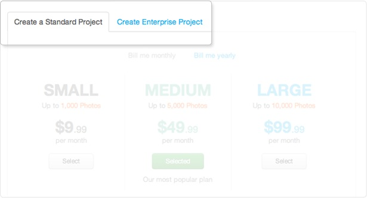
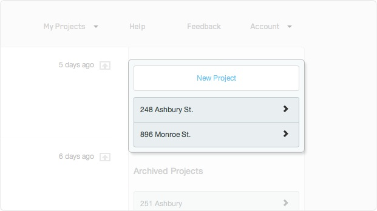
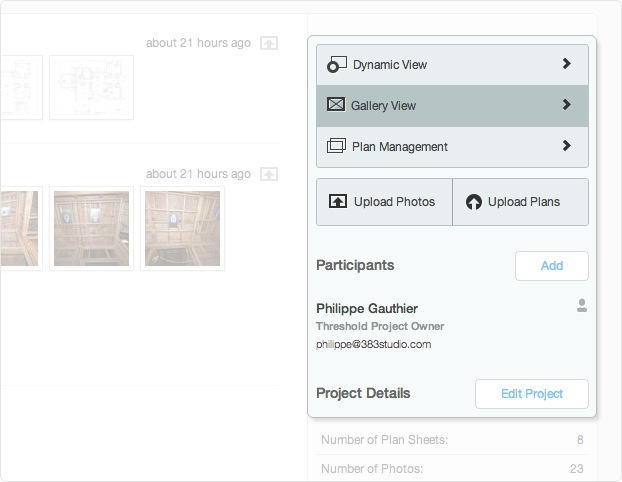
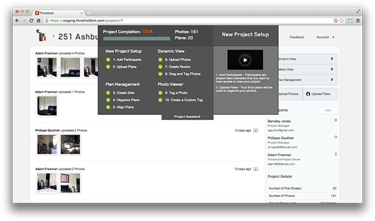
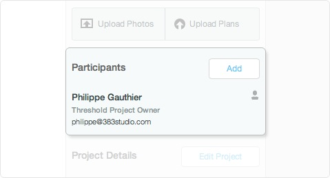
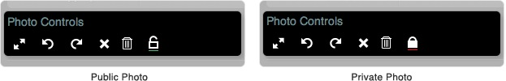

Introduction
Welcome to Threshold help. We've organized this knowledge base to roughly correspond with the steps required to start a project from scratch.
Note: We currently support Internet Explorer 9, 10, and all other major browsers. If you're experiencing problems with Threshold make sure you're not using Internet Explorer 8 or earlier versions.
If there are issues you can't resolve by reading these documents feel free to contact us at support@383studio.com.
New Project
Select which plan suits your project, enter the name of your project, and then enter your billing information. You can choose to be billed by month or by year and you can create a standard project or an enterprise project based on how many photos you need.
Once you start your project you'll be directed to the project dashboard.
Global Dashboard
The global dashboard is where you'll be sent each time you log in to Threshold. It's a combination of all your project's news feeds as well as the top level navigation for Threshold.
Global Dashboard Toolbar
From the global dashboard you can create new projects as well as drill down into specific projects. You can view a specific project by clicking its name below the new project button.
Project Dashboard
The project dashboard is your project-specific homepage. From this page you'll be able to manage your project which includes viewing the project specific news feed, inviting new participants, and the project assistant.
Project Dashboard Tools
The project dashboard is the main navigation point for your project. From here you'll be able to access all of the tools to manage your project. If you need to manage your project's settings (including billing) use the Edit Project button.
Project Assistant
The project assistant will guide you through the process of setting up a project. You can find the project assistant at the top of every project page.
We've divided the process into 10 steps. We recommend you complete the steps in the order listed to ensure a smooth project setup process. As you complete steps the subsections will be shown as complete.
Note: You can click on the four main subsections to learn a little bit more about the subsections below. We’lve also created videos for you to watch that deal with those specific steps.
Invite Users
You can invite new participants/project team members on the Project Dashboard.
You can invite as many participants to the project as you like. Simply click the add button to open the participants box. Enter the new participants full name, email address, job title, and permission level.
New Feature: Public vs. Private photos:
We've created a way for users to add photos to their project and choose whether they're public or private. You can set a photo's privacy level by selecting it on the website or by uploading it via the mobile app.
On the website simply open a photo and click the lock icon to designate whether it's public or private.
On the mobile app you'll choose the setting on the final options screen before you upload.
Permissions
- Threshold Project Owner: This is the default permission level for the person who created the project. This user has complete control over the project. They are the only user who has access to the project settings. Project settings is where users can delete the project, transfer the project ownership, and change their billing details. The project ownership can be transferred to another participant in project settings.
- Threshold Project Admin: This user can perform every action on the site with the exception of changing the project settings. If you want to invite users to use our mobile app and upload photos / plans, they'll need to be Threshold Project Admins. These users have access to both public and private photos on your project.
- View Only - Unrestricted: This user will be able view all photos (both public and private) and plans on your project. They won't have be able to delete or move any photos or plans.
- View Only - Restricted: This user will only be able to see photos that have been marked as Public. They will not be able to add or delete anything on the projec